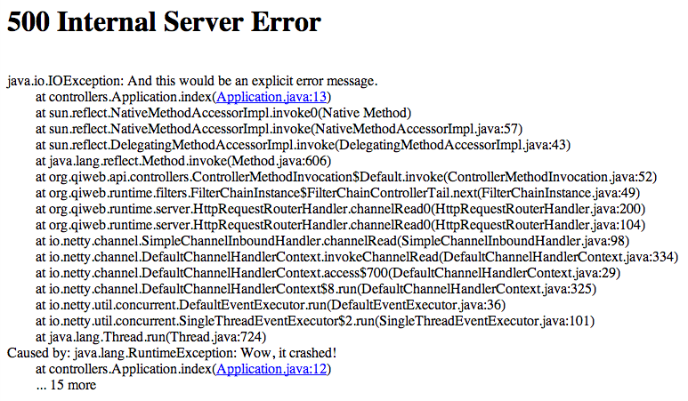

java -versionGetting started using Maven
Get started using Maven
As a starting point we’ll see how to build a "Hello World" style example.
After that we’ll take a look at the QiWeb development shell features.
We hope you’ll find your way through.
|
Important
|
Install Java 8
You need to install the Java 8 JDK and ensure that the following command show the proper version: Should output something like:
|
Preliminary Setup
Next step is to add the QiWeb SSL certificate to the certificates trusted by your Java 8 installation.
|
Note
|
This step is necessary while the project is private. Once published we’ll be able to remove this step. |
This will fetch the certifcate and put it in a file named qiweb-certificate.pem:
openssl s_client -connect scm.codeartisans.org:443 < /dev/null | openssl x509 -outform pem > qiweb-certificate.pemThis will import the certificate in the Java cacerts truststore:
sudo keytool -keystore "$JAVA_HOME/jre/lib/security/cacerts" -storepass changeit -import -trustcacerts -v -alias qiweb-certificate -file qiweb-certificate.pemOnce your environment is correctly set up on your computer, you can go on to the next step.
Using Maven
Create a new application
To create a new QiWeb application based on Maven, use the following command:
user@host $ git archive --format=tar --prefix=YOUR_APP_NAME/ --remote=git@scm.codeartisans.org:qiweb/qiweb-skel-maven.git GIT_REF | tar -xf -Where YOUR_APP_NAME is, well, your application name. A directory with this name will be created with the new application in it.
And where GIT_REF is the version of the application skeleton you want to use. You’ll use:
-
masterto get the latest stable version ; -
developto get the latest development version ; -
or a version identifier to get a specific version.
|
Important
|
What is this horrible command?
What the horrible command above does is to export the content of a git repository at a given reference to a directory of your choice without creating a clone. In other words, it simply downloads the content of a git repository at a given reference. A command line client for easy usage of application skeletons is under active discussion, planned and will be added in a future release. For the time being, you’ll have to copy/paste/edit, or type, this horrible command :) |
Run in development mode
To run a QiWeb application in development mode, use the devshell Maven goal:
user@host ~/hello-qiweb $ mvn org.qiweb:org.qiweb.maven:devshell
_____ _ _ _ _ _ ____ _____ _ _ _
| |_| | | |___| |_ | \ ___ _ _| __| |_ ___| | |
| | | | | | | -_| . | | | | -_| | |__ | | -_| | |
|__ _|_|_____|___|___| |____/|___|\_/|_____|_|_|___|_|_|
|__|
Loading...
Compiling Application...
>> QiWeb DevShell starting...
>> Ready for requests on http(s)://127.0.0.1:23023!You can now open your browser to http://localhost:23023/ to see the welcome page.

|
Tip
|
To run a QiWeb application in production mode, use the user@host ~/hello-qiweb $ mvn org.qiweb:org.qiweb.maven:start |
Application Walkthrough
The newly created application has a single HTTP route:
./src/main/resources/routes.conf
GET / controllers.Application.indexThat points to this controller method:
./src/main/java/controllers/Application.java
public Outcome index()
{
return outcomes().ok( "Hello QiWeb" ).build();
}|
Important
|
Every QiWeb application needs a secret
This secret is a key used for cypher and signature operations, it must be unique per application. Its place is in the application configuration, see |
Here is the project tree:
├── src │ └── main │ ├── java │ │ └── controllers │ │ └── Application.java <= Controller Java Class │ └── resources │ ├── application.conf <= Application Configuration │ └── routes.conf <= Routes │ └── pom.xml <= Maven build file
You can see that applications generated by qiweb follow the well known maven directory tree convention. Yes, it could have simplified things a bit to simply use src, app or conf directory names but this way it’s damn easy to add a Gradle or Maven build to such an application.
At the bottom of the tree you can see the Maven build file. Here is what you’ll find inside:
./pom.xml
<?xml version="1.0"?>
<project xmlns="http://maven.apache.org/POM/4.0.0"
xmlns:xsi="http://www.w3.org/2001/XMLSchema-instance"
xsi:schemaLocation="http://maven.apache.org/POM/4.0.0 http://maven.apache.org/maven-v4_0_0.xsd">
<modelVersion>4.0.0</modelVersion>
<groupId>hello-qiweb</groupId>
<artifactId>hello-qiweb</artifactId>
<version>1.0-SNAPSHOT</version>
<properties>
<project.build.sourceEncoding>UTF-8</project.build.sourceEncoding>
<project.reporting.outputEncoding>UTF-8</project.reporting.outputEncoding>
</properties>
<repositories>
<repository>
<id>qiwebRepo</id>
<url>https://repo.codeartisans.org/qiweb</url>
</repository>
</repositories>
<dependencies>
<dependency>
<groupId>org.qiweb</groupId>
<artifactId>org.qiweb.api</artifactId>
<version>{qiweb_version}</version>
</dependency>
<dependency>
<groupId>org.qiweb</groupId>
<artifactId>org.qiweb.server.bootstrap</artifactId>
<version>{qiweb_version}</version>
<scope>runtime</scope>
</dependency>
<dependency>
<groupId>org.qiweb</groupId>
<artifactId>org.qiweb.test</artifactId>
<version>{qiweb_version}</version>
<scope>test</scope>
</dependency>
</dependencies>
<pluginRepositories>
<pluginRepository>
<id>qiwebRepo</id>
<url>https://repo.codeartisans.org/qiweb</url>
</pluginRepository>
</pluginRepositories>
<build>
<plugins>
<plugin>
<artifactId>maven-compiler-plugin</artifactId>
<version>3.1</version>
<configuration>
<source>1.8</source>
<target>1.8</target>
</configuration>
</plugin>
<plugin>
<groupId>org.qiweb</groupId>
<artifactId>org.qiweb.maven</artifactId>
<version>{qiweb_version}</version>
</plugin>
</plugins>
</build>
</project>|
Tip
|
See the QiWeb Maven Plugin guide for more insights. |
Using the DevShell
From now on we’ll take a closer look at QiWeb Development Shell features.
Begin by starting the application in development mode, see above.
Then, open http://localhost:23023/, you should see the now well known Welcome page.
Instant feedback
At first we will introduce a compilation error in the application sources. Open ./src/main/java/controllers/Application.java and make changes that won’t compile, eg:
package controllers;
import org.qiweb.controllers.*;
public class Application {
public Outcome index()
{
THIS WON'T COMPILE return new org.qiweb.controllers.Welcome().welcome(); } }If you now hit your browser refresh button you’ll see something like that:

This tells you where the error is.
Now, let’s remove the compilation error but throw an exception:
package controllers;
import org.qiweb.controllers.*;
public class Application {
public Outcome index()
throws java.io.IOException
{
if( true )
{
Exception crash = new RuntimeException( "Wow, it crashed!" );
throw new java.io.IOException( "And this would be an explicit error message.", crash );
}
return new org.qiweb.controllers.Welcome().welcome();
}
}If you hit your browser refresh button again, this should show up:

You’ll notice that when application sources are concerned, the error page has links to open them quickly. Of course this will work better is you setup your development environment to open the files with the right applications.
Ok, things are failing well :-) We will now finally say "Hello World" from our HTTP Application.
Change the controller content to:
package controllers;
import org.qiweb.api.context.*;
public class Application {
public Outcome index()
{
return CurrentContext.outcomes().ok( "Hello World!" ).build();
}
}Hit your browser refresh button again. This time you should see Hello World!.
This is how the QiWeb Development Shell gives you instant feedback when coding.
Embedded documentation
When running the Development Shell, the whole QiWeb documentation is available right from the HTTP server that run your application.
Open http://localhost:23023/@doc to browse the documentation. This very article should be available at http://localhost:23023/@doc/getting-started.html but maybe you are already reading it from there.